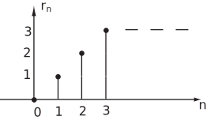

We showed earlier that the results
and similarly
follow from the linearity property.
You should be clear that there is
no
comparable result for the
product
of two sequences.
is not equal to
For two specific products of sequences however we can derive useful results.
Suppose
is an arbitrary sequence with z-transform
.
Consider the sequence
where
i.e.
By the z-transform definition
Thus we have shown that
That is, multiplying a sequence
by the sequence
does not change the form of the z-transform
. We merely replace
by
in that transform.
So, replacing
by
Using Key Point 8, write down the z-transform of the sequence
where
We have,
so with
we replace
by
to obtain
Using the property just discussed write down the z-transform of the sequence
where
We have,
So replacing
by
we obtain
Note the same denominator in each case.
An important sequence whose z-transform we have not yet obtained is the
unit ramp
sequence
:
Figure 5

Figure 5 clearly suggests the nomenclature ‘ramp’.
We shall attempt to use the z-transform of
from the definition:
This is not a geometric series but we can write
where we have used the binomial theorem (
HELM booklet
16.3) .
Hence
The z-transform of the unit ramp sequence is
(say)
Recall now that the unit step sequence has z-transform
(say) which is the subject of the next Task.
Obtain the derivative of
with respect to
.
We have, using the quotient rule of differentiation:
We also know that
(3)
Also, if we compare the sequences
we see that
, (4)
so from (3) and (4) we conclude that
Now let us consider the problem more generally.
Let
be an arbitrary sequence with z-transform
:
We differentiate both sides with respect to the variable
, doing this term-by-term on the right-hand side. Thus
But the bracketed term is the z-transform of the sequence
Thus if
we have shown that
or
We have already (equations (3) and (4) above) demonstrated this result for the case
.
If
then
By differentiating the z-transform
of the unit ramp sequence obtain the z-transform of the causal sequence
.
We have
so
By the quotient rule
Multiplying by
we obtain
Clearly this process can be continued to obtain the transforms of
etc.